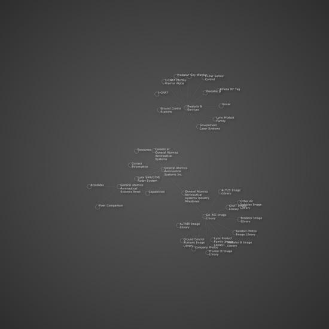

Posted by Lucas on Dec 10, 2009
Cheers.
Well here is a simple way.
fill(0) rect(0,0,WIDTH,HEIGHT) g.styles.default.fontsize = 10 g.styles.background = color(0,0,0,0) g.styles.default.fill = color(.5,.5,.5,0.5)Notice the 4th zero with the background!
Cheers.

Sitemap with Graph library
Posted by Owen Mundy on Dec 08, 2009
Using a spider written in PHP I collected all the pages and their relationship to each other then printed NodeBox-ready code to visualize it with the Graph library.
I have a couple questions maybe someone can help with.
1. Styling; how to get that gradient out of the background?
2. Is it possible to export a vector graphic from this?
Sharing the code...